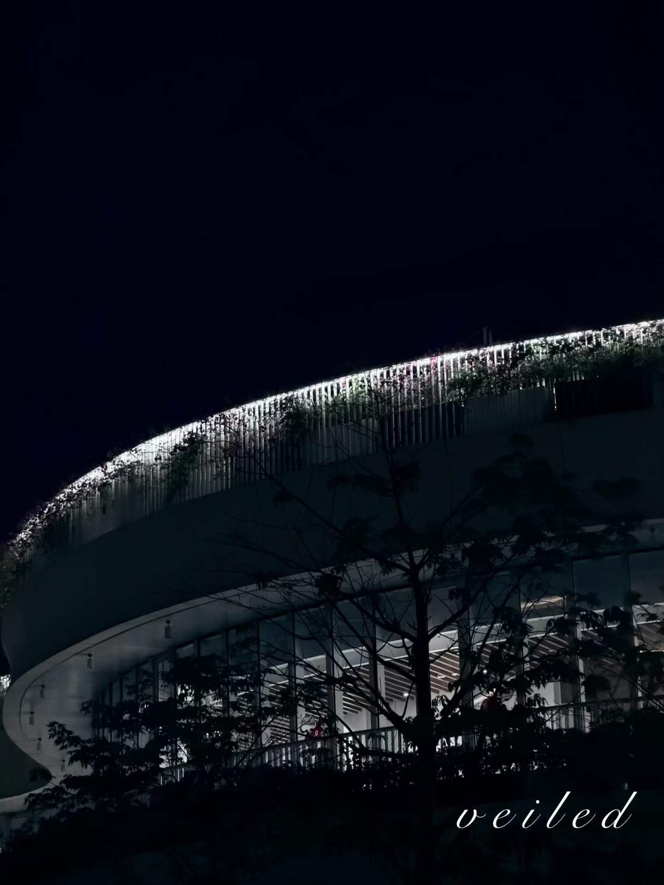
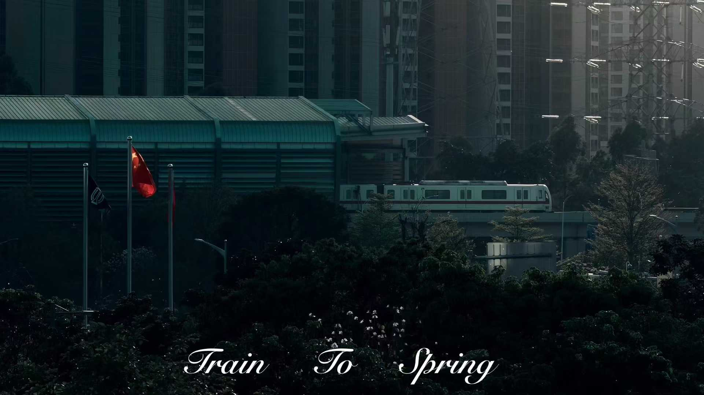
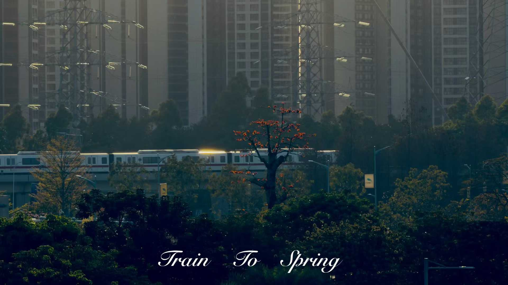
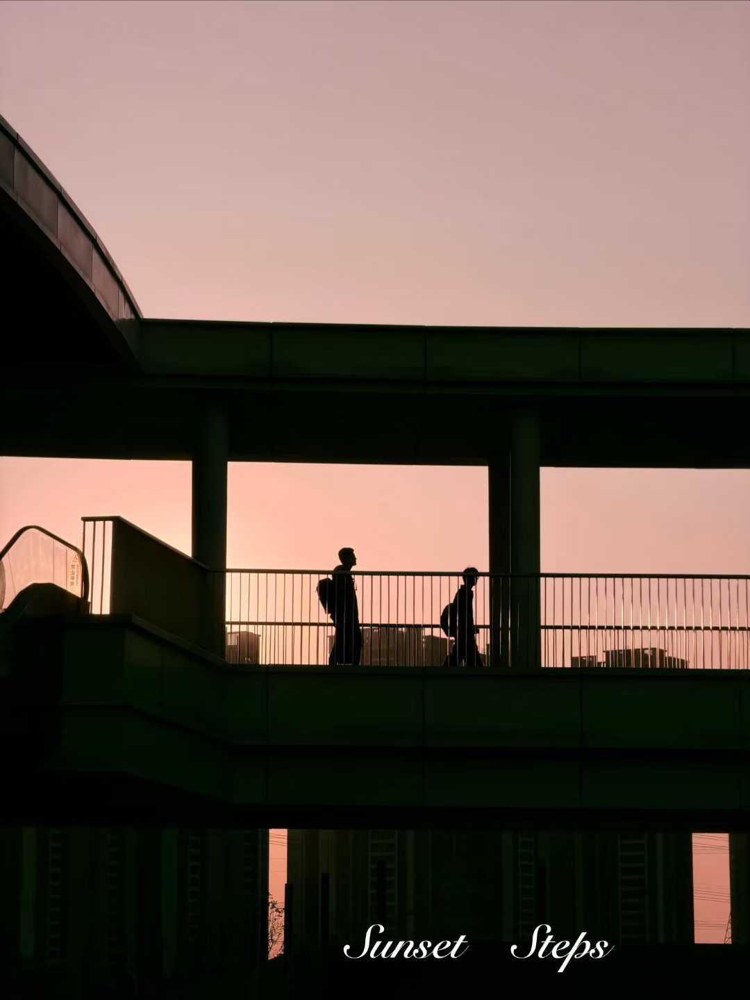
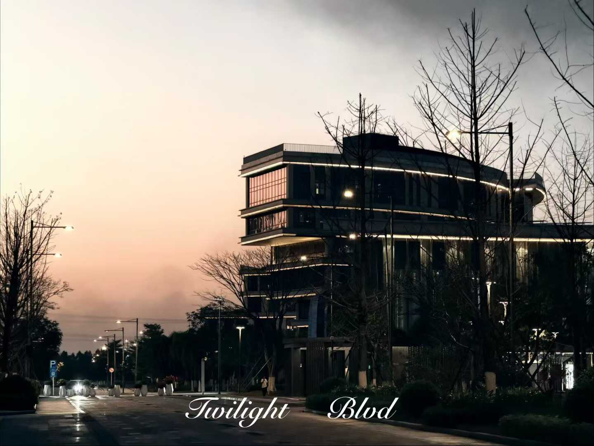
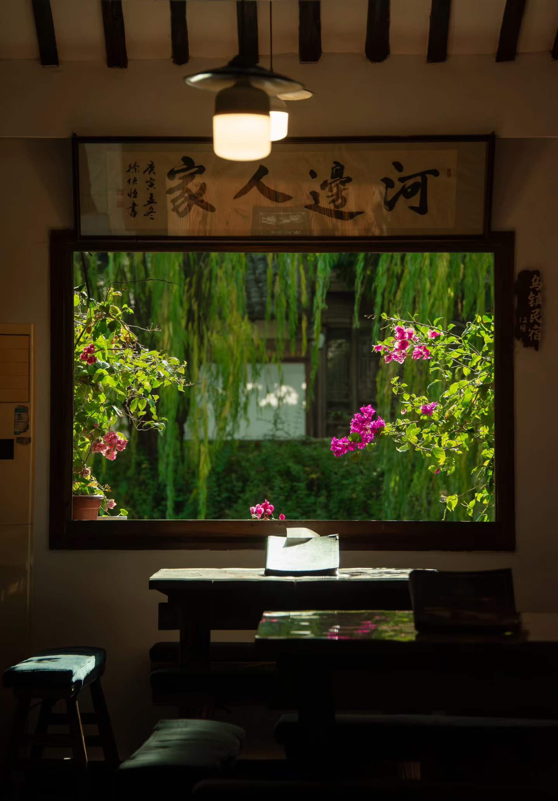
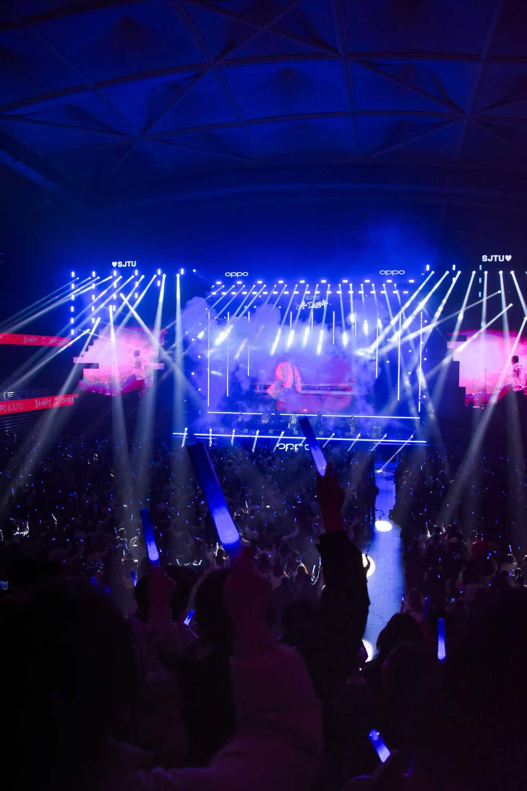

Summary
I am Kalman Lin, a Robotics and Autonomous Systems (ROAS) student at HKUST(GZ), focusing on intelligent robotics, perception, and embodied AI systems.

Personal Tech Portfolio
Robotics · Embodied AI · Intelligent Systems
I build reliable robotics software and AI-driven systems, with a focus on perception, autonomy, and real-world deployment.
I am Kalman Lin, a Robotics and Autonomous Systems (ROAS) student at HKUST(GZ), focusing on intelligent robotics, perception, and embodied AI systems.
Python · C++ · ROS1/2
Git · Docker · SLAM
LLM · mLLM · VLM
Active Thinker · Original Perspective · Rigorous Logic
Strong Drive · Strong Modeling Ability
Humorous · Approachable
Major: ROAS (Robotics and Autonomous Systems)
Key Coursework: Honors Calculus I & II, Honors General Physics I, C++ Programming, Introduction to Computer Science.
Scholarship: RMB 200,000 university scholarship.
Gaokao: 660 (Math 127, English 137, Physics 93, Chemistry 98).
Guangdong Provincial Rank: 1900 / 440,000 · Top 0.5%.
Real-time voice companion robot focused on elderly-care interaction and support.
Built a real-time voice interaction system for elderly-care scenarios to deliver emotional support and conversational companionship.
Interactive empathy-training game with guidance, feedback scoring, and multimodal interaction.
Designed an interactive chat-based education game that guides users with comforting response patterns and score feedback for empathy training.
Implemented detection-tracking-prediction pipeline for robust RoboMaster autonomous aiming.
Contributed to an armor detection, target tracking, and ballistic prediction pipeline for RoboMaster autonomous aiming.
Built operator-facing dashboard for status visualization and command dispatch.
Built and integrated an operator-side control and status visualization interface for RoboMaster workflow and command dispatch.
Unified campus platform integrating communication, services, and daily academic workflows.
One integrated campus platform serving students, faculty, and staff to improve academic openness, communication efficiency, and daily-life convenience.
High-concurrency reservation system for venues, facilities, and campus event tickets.
Developed a modular, high-concurrency booking platform for academic rooms, sports facilities, and event ticketing.
Supported large-scale spatial intelligence data engineering under challenging real-world conditions.
Period: 2025.12 – 2026.01
Data engineering for large-scale spatial intelligence pipelines.
Evaluated spatial perception, scene construction, and memory under extreme conditions (camera motion and heavy occlusion).
Built intuitive understanding of low-level system behavior in real-world spatial AI workflows.
Completed near-20k fine-grained annotations to improve downstream CV training quality.
Period: 2026.01 – 2026.02
Independently finished nearly 20,000 fine-grained mask annotations in one week.
Delivered robust labeling in low-contrast scenes to support targeted CV model optimization.
Deepened practical understanding of how data quality and data scale affect training outcomes.
Deepened Docker practice through open-source community learning and hands-on workflows.
Period: 2025.11
Deepened Docker learning and significantly enriched hands-on engineering experience.
Strengthened understanding of containerized development workflows and practical deployment patterns.
1st Prize · 3rd Place
Led engineering for auto-aim and operator-side system integration.
Ongoing project development in intelligent systems and engineering implementation.
Ongoing participation in aircraft design and multidisciplinary system optimization.







I am deeply interested in robotics, automation, computer vision, and embodied intelligence. I am always excited to connect with people working in these areas—or those exploring them with the same curiosity. I am actively looking forward to internship opportunities, research collaborations, and ambitious project partnerships.